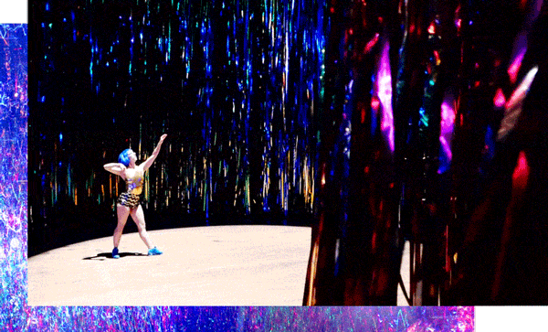
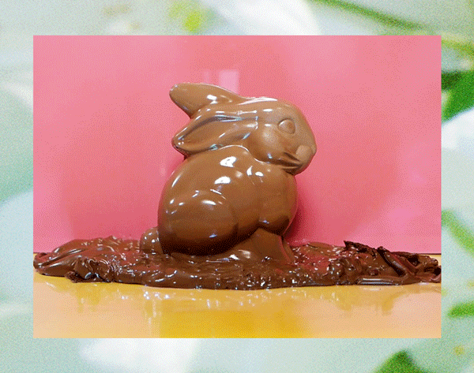

See more on GIFRIENDS.
 VICE: Nick Cave's The Let Go
 VICE: Easter
THE FADER: FlucT
THE KITCHN: Moody Tea
VICE: Halloween Dog Parade
NARRATIVELY: Headless Horseman
MATTER: Selfies
VICE: Christmas
THE ATLANTIC: After The Election
TIME: New York Primaries
RAY BAN: School of Doodle